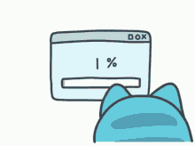

Porcentagem ou percentagem é uma medida de razão com base 100. É um modo de expressar uma proporção ou uma relação entre 2 valores a partir de uma fração cujo denominador é 100, ou seja, é dividir um número por 100. É muitas vezes denotado utilizando o símbolo de porcentagem "%"
